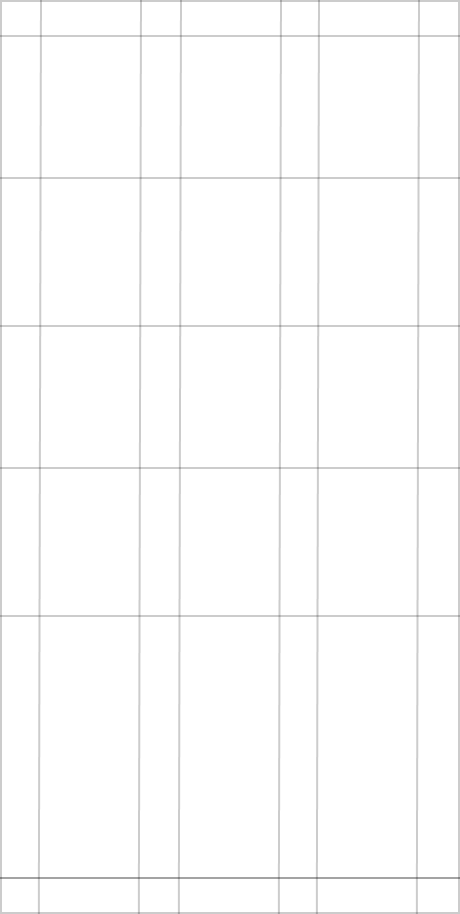

СТАЙЛГАЙД
О бренде
Мы показываем бренд как экологичное
пространство, в котором садоводы любого уровня
могут найти помощь в своем хобби. Бренд
основывается на природном достоянии нашей
страны и стремится к продвижению идеи
озеленения всей планеты.
Ценности
Люди
Отношения между участниками сообщества
и то, как мы относимся к друг другу, — ключевой момент успеха
Взаимное уважение к единомышленникам вне зависимости от обстоятельств, репутации, знаний и тд.
Каждый человек в сообществе ощущает себя комфортно, когда задает или отвечает
на вопрос
Знания
Это библиотека готовых решений для садоводов, собранных в формате проблема/решение в сжатом виде без ненужных деталей.
Вопрос и ответ могут быть написаны один раз, но его прочитают миллионы.
Миссия
ПОМОЧЬ ЛЮДЯМ СТАТЬ ЗАБОТЛИВЫМИ САДОВОДАМИ
Логотип и знак
Логотип используется на больших носителях,
таких как постеры, рекламные баннеры и т. д. Знак
используется на мерче или мелких носителях.
Логотип
Охранное поле
Неверное использование
Растягивание логотипа
в высоту и ширину
Поворот логотипа
не по сетке
Использование цвета
Знак
Представляет собой первую букву логотипа
и вписывается в круг. Объединение понятий круга,
как общности, и буквы, как сообщества.
Можно использовать
монохромные цвета
Можно использовать в качестве
контейнера для фотографии
Расположение логотипа и знака
Формат А4
(Наведите, чтобы увидеть пример)
Логотип распологается в верхнем
левом углу
В формате А4 блок логотипа всегда
располагается рядом с текстом
и не перекрывает фотографию
Квадрат
В квадратном формате логотип
располагается внизу посередине
или в верхнем левом углу

Цвета
В основе цветовой палитры лежат самые
стандартные и понятные цвета: белый и черный.
Ограничения
В качестве фона может использоваться
только белый цвет, либо фотография.
Типографика
Florum Font
Raleway
Размер шрифтов
Кегель шрифта для заголовков, подзаголовков
и сплошного текста обязательно должен быть
кратным 10. Так мы придаём дизайну системность,
понятность и простоту.
Примеры
Сетка
Сетка важнейшая составляющая процесса
построения композиции. Она построена из равных
друг другу квадратов, что позволяет добиться
полной структурности и понятности в композиции
Формат
Вертикальный
6 колонн
Квадрат
9 колонн
Мобильный
3 колонн
Работа сетки с фотографиями
Горизонтальный формат
Фотография занимает 7 колонн
Вертикальный формат
Фотография занимает 7 колонн
Дополнительная графика
Контейнер для фотографий
Фигуры в которые вписываются фотографии
одновременно олицетворяют динамичность
растений и структурность знаний.
1. По квадратной сетке нарисуйте заготовку для вашей фигуры
2. Примените инструмент скругления углов со значением 30px
3. Заполните полученную фигуру нужной фотографией
Выделительная рамка
Наш бренд основывается на решении
возникающиющих вопросов, поэтому важно
использовать этот элемент в айдентике.
Предлагается использовать выделительную рамку,
в которую помещаются слова или словосочетания,
помогающие пользователю быстро понять, какая
проблема решается в том или ином
информационном блоке
Примеры использования
Ограничения
Нельзя использовать более двух слов
Не допускается нарушение пропорций
Фотостиль
Визуальный стиль Florum передает энергетику
экологичности и открытости коммуникаций
внутри медиа-сервиса, поэтому важно соблюдать
рекомендации фотостиля.
При подборе фотографий стоит придерживаться
цветовой палитре, ассоциирующейся
с экологичностью и направлением бренда.
Для всех снимков рекомендуется использовать
специальный пресет для соблюдения единого
визуального стиля и гармоничности.

Оформление соц сетей
Инстаграмм

Ютуб
Фейсбук
Плакаты в среде

Tone of voice
Florum – это дружелюбное комьюнити. Для нас важно
полностью расположить человека к себе
и предоставить комфотрную и экологичную
атмосферу для общения. Поэтому нужно избегать
агрессивных высказываний, относится с уважением
ко всем участникам сообщества.
Избегаем ярких, агрессивных изображений, основываемся на уютных и натуральных цветах
С уважением относимся ко времени человека, доносим информацию четко и без лишнего мусора
В плакатах используем вопросительные
или побудительные фразы с позитивной окраской
Всеми силами пытаемся выполнить свою миссию по озеленению планеты
Мерч
Одежда

Приспособления для сада

Аксессуары